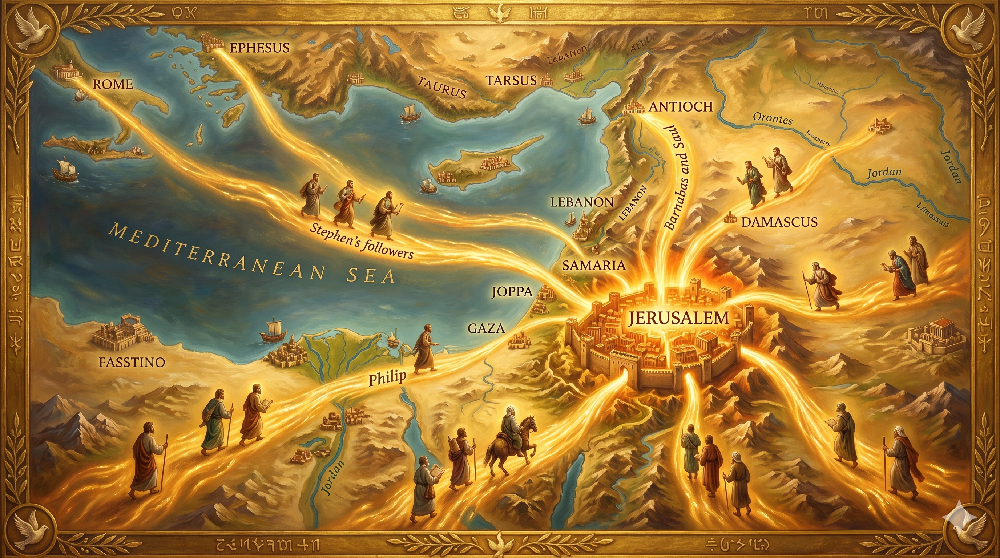

돌에 맞으면서도 하늘을 향해 기도하는 스데반 — 그 곁에 옷을 지키며 서 있는 젊은 사울, 한 순교자의 죽음이 역사의 물줄기를 바꾸는 순간
"무릎을 꿇고 크게 불러 이르되 주여 이 죄를 그들에게 돌리지 마옵소서 이 말을 하고 자니라 사울은 그가 죽임 당함을 마땅히 여기더라 그 날에 예루살렘에 있는 교회에 큰 박해가 있어 사도 외에는 다 유대와 사마리아 모든 땅으로 흩어지니라" — 사도행전 7:60–8:1
스데반의 순교가 역사에 남긴 가장 강렬한 흔적은 역설적이게도 그가 무릎 꿇고 올린 마지막 기도에 있습니다. "주여, 이 죄를 그들에게 돌리지 마옵소서"(행 7:60). 이 기도는 십자가 위에서 "아버지여, 저들을 사하여 주옵소서"라고 하신 예수님의 기도와 정확히 같은 결이었습니다. 스데반은 죽으면서도 자신을 죽이는 자들의 영혼을 위해 기도했습니다. 그리고 그 기도의 직접적인 수혜자가 있었습니다. 그 현장에서 옷을 지키며 서 있던 한 젊은이, 바로 사울이었습니다. 훗날 바울이 된 그 사람은 고백합니다. "나는 이전에 비방자요 박해자요 폭행자였으나 도리어 긍휼을 입었다"(딤전 1:13). 스데반의 용서 기도가 씨앗이 되어 바울이라는 열매를 맺은 것입니다.
또 하나의 역설이 있습니다. 스데반의 죽음 직후 예루살렘 교회에 대박해가 일어나 성도들이 사방으로 흩어졌습니다(행 8:1). 박해자들의 입장에서는 교회를 진압하는 데 성공한 것처럼 보였습니다. 그러나 흩어진 성도들은 가는 곳마다 복음을 전했고(행 8:4), 그것이 복음의 유대 변방 선교, 사마리아 부흥, 그리고 이방인 세계로의 확장을 이끌었습니다. 스데반 한 사람의 죽음이 예루살렘에 머물던 복음을 온 세상으로 퍼뜨린 촉매가 된 것입니다. 하나님은 인간의 박해마저 복음의 도구로 바꾸십니다. 씨앗이 땅에 떨어져 죽어야 많은 열매를 맺는 것처럼(요 12:24), 스데반의 순교는 초대교회 선교의 가장 중요한 씨앗이었습니다.

예루살렘에서 사마리아와 안디옥을 거쳐 온 세상으로 퍼져 나가는 복음의 물결 — 스데반의 순교 이후 흩어진 제자들이 가는 곳마다 복음을 전하는 초대교회 선교의 파노라마
스데반의 이야기는 우리에게 가장 어렵고도 가장 강력한 질문을 던집니다. 나를 해치는 사람을 위해 기도할 수 있습니까? 억울한 일을 당하면서도 "주여, 저들의 죄를 용서하소서" 라고 말할 수 있습니까? 이것은 감정으로 되는 일이 아닙니다. 스데반이 할 수 있었던 것은 죽는 순간에도 하늘이 열리고 인자가 서 계신 것을 보았기 때문입니다(행 7:56). 영원한 실재가 보일 때, 현재의 고통은 상대적인 것이 됩니다. 우리가 용서를 실천하려면 먼저 영원한 것에 시선을 고정해야 합니다.
또한 스데반의 죽음이 가져온 결과를 보면서, 우리는 지금 당장 보이지 않는 열매에 대한 믿음을 가질 수 있습니다. 지금 내가 심는 씨앗 — 포기하지 않는 신앙, 용서의 기도, 작은 선교의 발걸음 — 이 언제, 누구에게 어떤 열매로 맺힐지 우리는 모릅니다. 스데반도 몰랐습니다. 그러나 하나님은 아십니다. 오늘 우리가 심는 씨앗이 훗날 또 하나의 바울을 키워낼 수도 있습니다. 신실하게 자기 자리를 지키고, 용서하고, 기도하는 것 — 그것으로 충분합니다.
스데반의 마지막 기도 한 마디가 바울을 만들었습니다.
당신의 용서 한 번, 기도 한 번이 누군가의 인생을 바꿀 수 있습니다.
씨앗은 땅에 떨어져 죽어야 열매를 맺습니다.